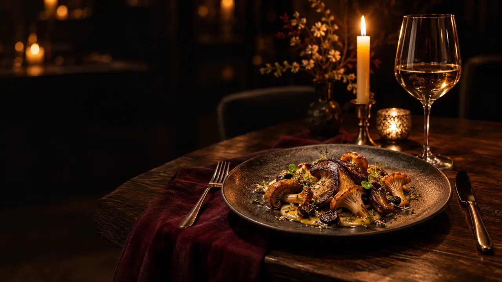
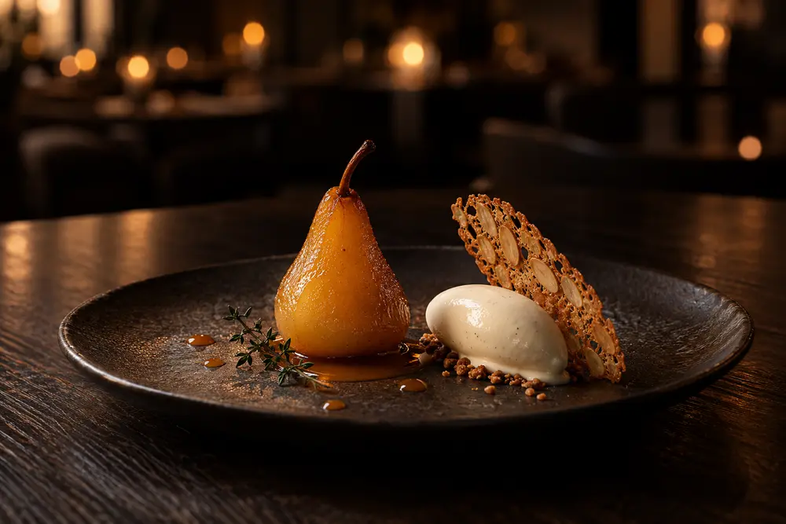

01 / 1018:30
Rugio pasveikinimas
Šilta raugo duona, plaktas sviestas ir lengvas salyklo traškesys.
Vynas · Sausas putojantis vynasBe alkoholio · Rugio ir obuolių gėrimas

Dešimt patiekalų. Vienas stalas.
Ir laikas, kurį pasiliekame sau.
Mums patinka trumpa ingredientų kelionė ir ilgas vakaras. Nuo šilto rugio iki kriaušės sirupe — skoniai keičiasi lėtai, šviesa tampa šiltesnė.
Kiekvieną patiekalą lydi vyno arba nealkoholinio derinimo idėja. Jūs pasirenkate savo ritmą.
Išgalvotas sezoninis meniu. Laikai nurodo pasakojimo eigą.
Slinkite arba keiskite patiekalus rodyklėmis. Šviesa šiltėja kartu su vakaru.
Skyriaus nuotaika. Originali AI iliustracija.
01 / 10Šilta raugo duona, plaktas sviestas ir lengvas salyklo traškesys.
Keptas burokėlis, juodųjų serbentų rūgštelė ir krapų aliejus.
Miško grybai, rusvintas sviestas ir kelios šviežių žolelių natos.
Žarijose keptas salieras, obuolys ir skrudinto lazdyno riešuto trupinys.
Upėtakis traškia odele, saliero kremas ir krapų aliejaus lašai.
Šaukštelis obuolių šerbeto su švelnia kadagio gaiva.
Lėtai keptas moliūgas, sėklų kremas ir rūgštaus šermukšnio akcentas.
Brandintas sūris, šiltas kriaušių pagardas ir plona ruginė skrebutė.
Sirupe troškinta kriaušė, vaniliniai ledai ir trapus migdolų lakštas.
Juodojo šokolado kąsnis ir puodelis grikių arbatos. Pokalbiui dar lieka laiko.

Dar puodelis arbatos. Dar vienas pokalbis. Saldus paskutinis kąsnis palieka vietos tylai.
Vakarą užbaigiame taip, kaip pradėjome — prie to paties stalo.
Pasirinkite vakarą, laiką ir vietą salėje.
Santrauka liks tik šiame lange.
Tai demonstracinė santrauka. Stalas neužsakytas, alergijų suderinimas nepatvirtintas. Uždarius langą pasirinkimai neišsaugomi.
Numatykite apie dvi su puse valandos. Meniu laikas yra pasakojimo pavyzdys, o rezervacijos santrauka apskaičiuoja pabaigą nuo jūsų pasirinkto atvykimo.
Pastabą galite įrašyti prie rezervacijos pasirinkimų. Demonstracija tik parodo jos vietą santraukoje. Tikroje svetainėje meniu suderinimą turi atskirai patvirtinti restorano komanda.
Ne. Tai išgalvotos menės vietinė demonstracija. Nėra tikro siuntimo, mokėjimo, išsaugotų duomenų ar rezervacijų sistemos.